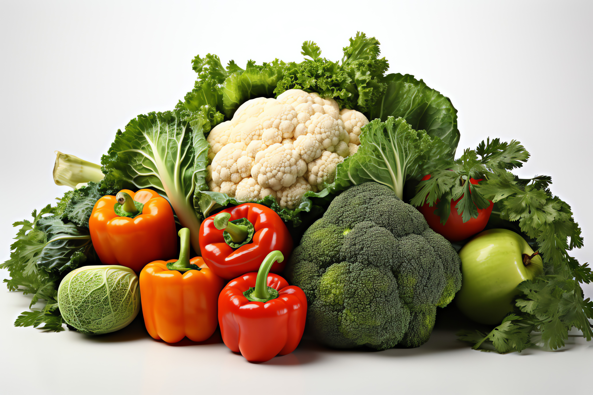

Helsefordeler

Hjem
Om nettsiden
Helsefordeler
Oppskrift
Fajitas er sunt fordi det innholder kylling istedenfor vanlig
kjøttdeig som taco inneholder. Kylling er noe av det mest fett
fattige kjøttet du kan få i deg og det er rik på protein, så det
er både næringsrikt og sunt. Denne retten ligner mye på taco, idet
at du kan velge hva du vil ha inni lefsen, når man spiser wraps så er
det ofte at man spiser mere grønnsaker enn vanligvis, det er fordi du kan
stappe så mye inni den og det smaker ekstra godt når du har variasjon av grønnsaker
som paprika, mais, salat og agurk.
Næringsinnhold
Per 100 g
Kalorier
Energi
Fett
Karbohydrater
Mettet fett
Protein
Salt
Sukkerarter